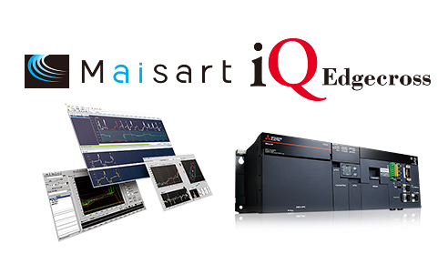
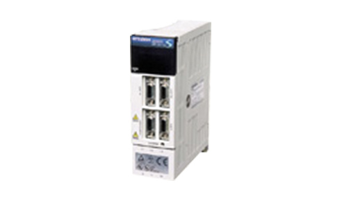
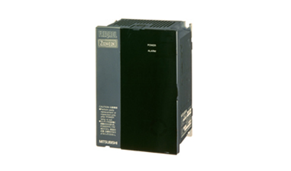
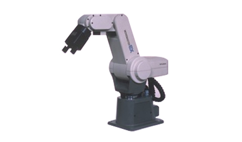
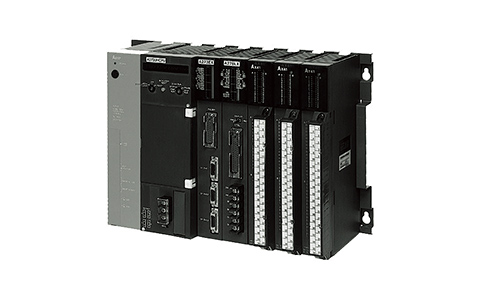
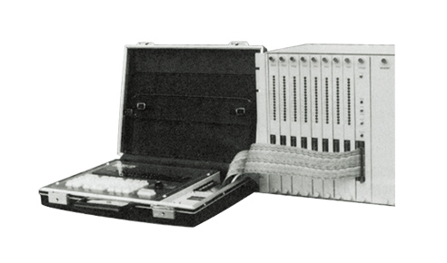
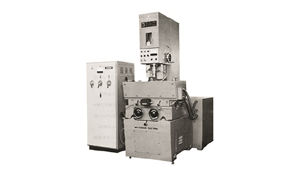
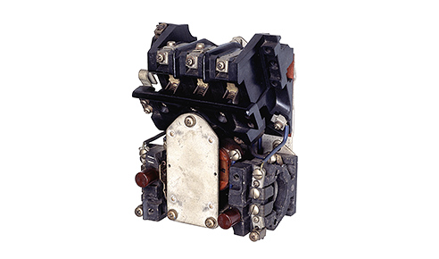

Kontribusi FA terhadap sejarah Mitsubishi ElectricInovasi, hal pertama, dan visi FA

FA: Terus Berinovasi
Di Mitsubishi Electric, inovasi bukanlah peluang acak, tetapi bukti budaya Kaizen kami. Hasilnya, kami secara teratur menjadi salah satu dari lima perusahaan teratas di dunia yang mengajukan aplikasi paten internasional, banyak di antaranya yang kemudian menjadi produk dengan hak ciptanya sendiri. FA telah menjadi kontributor kuat bagi inovasi teknis tersebut; berikut ini beberapa contohnya:
2018

Pelopor industri:
peluncuran perangkat lunak iQ Edgecross Real Time Data Analyzer yang didukung AI dan seri PC industri MELIPC
Pelajari lebih lanjut
2018
Pelopor industri:peluncuran perangkat lunak iQ Edgecross Real Time Data Analyzer yang didukung AI dan seri PC industri MELIPC
Pada bulan Mei 2018, Mitsubishi Electric meluncurkan rangkaian perangkat lunak iQ Edgecross yang diawali dengan Real Time Data Analyzer (RTDA), perangkat lunak analisis data dan diagnostik yang didukung AI (Maisart). Kompatibel dengan platform perangkat lunak komputasi, Edgecross, perangkat lunak ini mendukung pemeliharaan preventif dan peningkatan kualitas di lantai produksi.
Seri PC industri MELIPC diluncurkan pada waktu yang sama. Ideal untuk kontrol terkait otomatisasi pabrik dan aplikasi komputasi tepi, seperti RTDA, tiga model awal menyertakan MI5000 andalan, yang mampu memproses informasi produksi dan melakukan kontrol peralatan secara real-time dari satu unit. Kemudian pada bulan Februari 2019, rangkaian tersebut diperluas dengan MI3000 Panel IPC yang menawarkan layar sentuh kristal cair beresolusi tinggi bawaan.
2001
Pelopor industri:
peluncuran pendekatan terpadu FA-IT e-F@ctory untuk manufaktur
Pelajari lebih lanjut
2001
Pelopor industri:peluncuran pendekatan terpadu FA-IT e-F@ctory untuk manufaktur
Pada tahun 2001, semakin pentingnya komputerisasi, pembagian informasi antara lokasi produksi dan departemen manajemen, pemantauan jarak jauh, layanan terpadu melalui siklus hidup produk, dan produk yang disesuaikan, semuanya mulai memengaruhi lingkungan otomasi pabrik (FA). Hal ini menyebabkan Mitsubishi Electric mengembangkan konsep "e-F@ctory" sebagai cara untuk memecahkan masalah ini dan masalah terkait FA-IT lainnya.
e-F@ctory adalah dasar dari kerangka kerja untuk mengoptimalkan seluruh proses manufaktur dengan menghubungkan semua peralatan dan proses seperti pengembangan, manufaktur, logistik, dll. dengan IoT. Dari sini, pengguna dapat dengan cepat menanggapi perubahan dalam lingkungan pasar, menemukan nilai tambah melalui analisis, dan mengambil tindakan segera atas data yang dikumpulkan dalam proses manufaktur. Sejak tahun 2003 ketika proposal skala penuh awal kepada pelanggan dimulai, cakupannya telah diperluas untuk mencakup masalah rantai pasokan, kelompok produk tambahan, dan alat pendukung di antara hal-hal lainnya. e-F@ctory terus berkembang untuk mendukung aktivitas peningkatan pabrik dan menurunkan total biaya kepemilikan (TCO).
1999

Pemimpin kinerja:
Servo AC seri MELSERVO-J2-Super yang sangat responsif meningkatkan produktivitas mesin industri
Pelajari lebih lanjut
1999
Pemimpin kinerja:Servo AC seri MELSERVO-J2-Super yang sangat responsif meningkatkan produktivitas mesin industri
Pada tahun 1999, Mitsubishi Electric merilis seri servo AC MELSERVO-J2-Super untuk memenuhi tuntutan produktivitas yang lebih tinggi dalam peralatan manufaktur semikonduktor dan peralatan mesin. Untuk melakukan ini, banyak kemajuan telah dibuat, misalnya, penguat servo memiliki kinerja kontrol servo yang paling responsif di industri, penyetelan otomatis waktu nyata untuk kegunaan yang lebih baik, fungsi analisis mesin yang menganalisis karakteristik mekanis mesin dari perspektif servo, dan fungsi pencarian penguatan yang mengoptimalkan waktu penyelesaian. Selain itu, motor servo HC-KFS dirancang dengan dimensi eksternal yang sama dengan produk pendahulunya dan memiliki beban inersia yang tinggi untuk memudahkan peningkatan penguatan servo untuk perangkat dengan kekakuan rendah. Lebih jauh, detektor dengan enkoder absolut dengan resolusi 16 kali lipat dari produk konvensional ditambahkan sebagai standar. Hasilnya adalah sistem servo yang memberikan fungsionalitas tinggi dan kemudahan penggunaan yang berkontribusi pada pengembangan industri manufaktur secara keseluruhan.
1991

Pertama di Jepang:
pengembangan inverter ultra-kompak, seri FREQROL-Z024
Pelajari lebih lanjut
1991
Pertama di Jepang:pengembangan inverter ultra-kompak, seri FREQROL-Z024.
Pada bulan April 1991, Mitsubishi Electric merilis FR-Z024, inverter ultra-kompak pertama di industri ini yang berukuran buku saku (A6). Empat kali lebih kecil dari inverter 0,4 kW berukuran biasa (A4) pada saat itu, tujuannya adalah untuk "membedakan dan mengejutkan" melalui inovasi teknologi.
Untuk mencapai hal ini, perlu menggunakan IC (sirkuit terpadu) miniatur yang biasanya ditemukan pada barang-barang konsumen. Meskipun kekebalan gangguan listrik IC menjadi masalah, setelah serangkaian percobaan dan kesalahan dengan penempatan komponen, antara lain, desain yang berhasil memenuhi standar akhirnya tercapai. Selain itu, kemajuan dalam teknologi produksi juga diperlukan karena papan sirkuit kompak memerlukan pemasangan komponen dengan kepadatan tinggi di permukaan untuk pertama kalinya. Selain itu, untuk mencapai ukuran A6 yang ditargetkan, unit daya dan unit kontrol dipisahkan dan disusun satu di atas yang lain. Inverter FR-Z024, yang diciptakan dengan mengatasi sejumlah tantangan, melampaui penjualan perusahaan lain dan mengukuhkan pangsa pasar teratas Mitsubishi Electric di pasar Jepang.
1987

Perusahaan pertama:
peluncuran robot mikro berperforma tinggi Movemaster untuk pendidikan dan industri
Pelajari lebih lanjut
1987
Perusahaan pertama:peluncuran robot mikro berkinerja tinggi Movemaster untuk pendidikan dan industri
Dikembangkan pada tahun 1982, Mitsubishi Movemaster adalah robot desktop untuk pendidikan dan penelitian. Konsep di balik robot kecil dan ringan dengan kapasitas motor kurang dari 80W ini adalah mudah dikendalikan dari komputer pribadi sehingga dapat digunakan oleh siapa saja; dari industri hingga sekolah atau laboratorium. Selain itu, selain menjadi robot pribadi yang populer, permintaan akan Movemaster yang murah dan mudah digunakan di lingkungan industri untuk melakukan tugas-tugas ringan dan sederhana pun meningkat. Pada akhir tahun 1980-an, seri RV-M1 dikembangkan. Robot ini menggunakan motor servo DC, dan memberikan peningkatan kinerja dasar dan fungsi program, yang semuanya membantu Movemaster menjadi robot terlaris di dunia.
1985

Penjualan terbaik:
peluncuran PLC serbaguna seri MELSEC-A untuk aplikasi FA
Pelajari lebih lanjut
1985
Penjualan terbaik:peluncuran PLC serbaguna seri MELSEC-A untuk aplikasi FA
Dibandingkan dengan seri K yang ada, yang ditujukan untuk kontrol lini produksi otomotif dan makanan, peluncuran pengontrol logika terprogram (PLC) seri MELSEC-A yang lebih serbaguna pada tahun 1985 ditujukan untuk berbagai aplikasi kontrol otomasi pabrik (FA) umum. Dengan memanfaatkan teknologi pemasangan permukaan untuk mengurangi ukurannya, seri A memperluas kemampuannya dengan menambahkan berbagai opsi seperti unit pemosisian dan komunikasi. Dengan berat kurang dari 8 kg, unit pemrogramannya hanya setengah dari model konvensional, sehingga mudah dibawa-bawa di lantai pabrik. Selain itu, dengan mewarisi bahasa pemrograman kontrol sekuensi dari model sebelumnya, seri A diterima secara luas oleh pengguna dan terus memberikan kontribusi besar dalam memperluas bisnis PLC.
1973

Perusahaan pertama:
peluncuran MELSEC-310, PLC pertama Mitsubishi Electric yang menggantikan panel kontrol relai
Pelajari lebih lanjut
1973
Perusahaan pertama:peluncuran MELSEC-310, PLC pertama Mitsubishi Electric yang menggantikan panel kontrol relai
Pada tahun 1960-an, panel kontrol relai di fasilitas produksi menjadi lebih besar dan lebih kompleks karena peningkatan skala kontrol. Oleh karena itu, arsitektur baru diperlukan untuk menangani perluasan ini. Untuk mengatasi hal ini, teknologi dan pengetahuan dari empat divisi; Pusat Sistem Komputer, Pusat Sistem Kontrol, Pabrik Nagasaki, dan Pabrik Nagoya disatukan, dan pada tahun 1973, pengontrol logika terprogram (PLC) pertama perusahaan, MELSEC-310, berhasil diselesaikan.
Dengan memanfaatkan semikonduktor dengan sirkuit terpadu dan teknologi digital yang dikembangkan untuk mendukung peningkatan komputer elektronik, proses kontrol dapat dengan mudah diubah dengan mengganti logika kabel melalui relai elektromagnetik konvensional dengan logika perangkat lunak melalui memori dan prosesor. Arsitektur dasar yang sangat andal dan mudah digunakan ini meletakkan fondasi bagi sistem PLC saat ini.
1964

Perusahaan pertama:
sistem EDM pertama yang diproduksi sepenuhnya oleh perusahaan, DIAX
Pelajari lebih lanjut
1964
Perusahaan pertama:sistem EDM pertama yang diproduksi sepenuhnya oleh perusahaan, DIAX
Mitsubishi Electric mengambil alih produksi bodi utama untuk mesin-mesin tertentu dari Mitsubishi Heavy Industries pada tahun 1963. Kemudian, pada tahun 1964, mesin pelepasan listrik (EDM) pertama yang sepenuhnya diproduksi oleh Mitsubishi Electric, DIAX-DM201, keluar dari jalur produksi. Pada tahun yang sama, Mitsubishi Electric menggunakan semikonduktor thyristor untuk catu daya guna mengatasi salah satu tantangan terbesar dalam industri ini; keausan elektroda yang berlebihan, sehingga memantapkan posisinya dalam industri ini. Pada tahun 1972, perusahaan ini memulai produksi mesin pelepasan listrik kawat, DIAX-DWC50S-LT. Sebagai respons terhadap permintaan industri akan kecepatan pemesinan yang lebih tinggi, untuk pertama kalinya di dunia, Mitsubishi Electric melengkapi sistem seri-N dengan catu daya transistor, yang memungkinkan peralihan kecepatan tinggi dengan arus puncak tinggi, untuk mencapai kecepatan pemesinan tercepat di dunia sebesar 60㎟ per menit. Perusahaan ini terus meningkatkan kecepatan tercepat di dunia, dari 250㎟ per menit pada tahun 1985 menjadi 500㎟ per menit pada tahun 2002. Mitsubishi Electric mempertahankan posisinya di posisi teratas dalam industri ini setelah memproduksi total 70.000 unit hingga Februari 2019.
1933

Pertama di industri:
Pemutus sirkuit 15-35A tanpa sekering pertama di Jepang
Pelajari lebih lanjut
1933
Pertama di industri:Pemutus sirkuit 15-35A tanpa sekering pertama di Jepang
Pada tahun 1933, Mitsubishi Electric meluncurkan pemutus sirkuit 15-35A tanpa sekering pertama yang diproduksi di dalam negeri. Sebelumnya, sakelar sekering digunakan untuk saluran masuk daya, tetapi ada beberapa masalah dengan pengaturan ini, misalnya, perawatannya memakan waktu lama, penggantian sekering, dll., dan juga ada kekhawatiran tentang keselamatan. Pemutus sirkuit tanpa sekering baru yang menggantikan sakelar sekering dikembangkan dan dirilis oleh Westinghouse Electric di Amerika Serikat pada tahun 1929. Namun, Mitsubishi Electric membawa teknologi ini ke Nagoya Works, mengembangkannya lebih lanjut, dan merilis pemutus sirkuit tanpa sekering pertama yang diproduksi di Jepang pada tahun 1933. Produksi pemutus sirkuit tanpa sekering dipindahkan ke Fukuyama Works pada tahun 1962, dan bahkan sekarang, terus membuat langkah besar baik di dalam negeri maupun internasional.